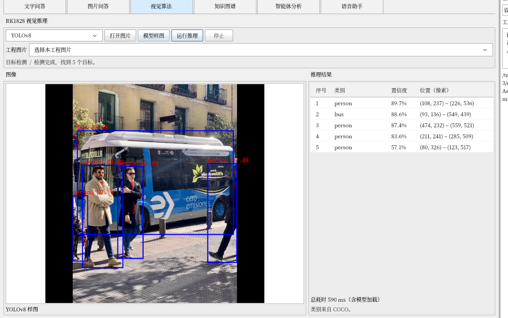
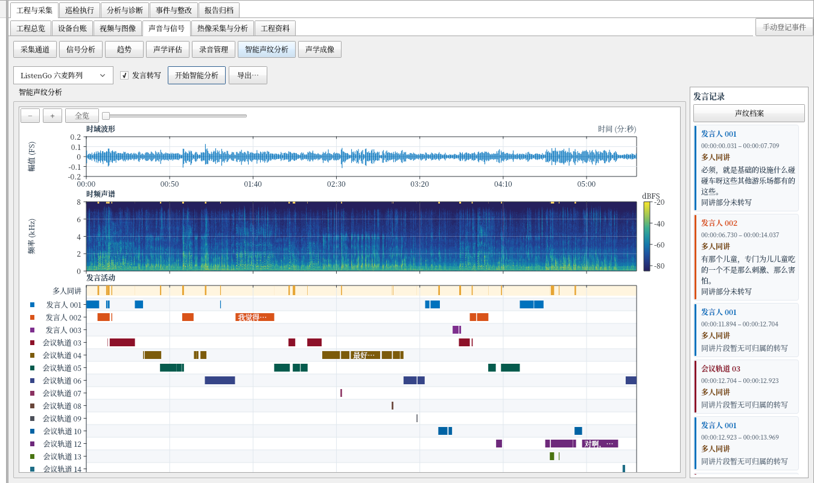

01THE CHALLENGE
现场数据很多，
真正的关联判断却很难。
目前现状
多源数据分散



可见光声学热像
核心问题
数据与决策之间存在断点
01发现异常缺乏跨模态印证
02识别原因依赖人工逐项排查
03现场交接依据难以连续追踪


02 / ON-DEVICE AI
工程资料 · 测量读数 · 现场问题

ON-DEVICE INFERENCE
短请求 · 图像问答 · 中文指令
MODEL THROUGHPUT
板端运行时采集
03 / MULTIMODAL SENSING
画面 · 声音 · 热像 · 语音

VISUAL SHOWCASE

可见光与视频理解
红外热成像
听见，也能看见
六麦阵列 · 四种算法 · 画面叠加
信号背后，自有线索
语音记录与交接
同一时刻，同一件事
多源数据 · 关联采样
感知 → 关联 → 理解 → 输出
声音热像
一个平台，贯穿现场与处置
现场感知与板端分析
采集 · 检测 · 本地推理
一次巡检，连贯发生
CAPTURE
深入真实工作

频谱定位 · 温度复核
录音 · 频段 · 热像
现场可用 · 结果可查

技术规格
观澜 SPECTRA
多模态巡检，尽在观澜。